The IDAI Power Rangers Family is a united force of compassion and service, each member carrying a unique essence yet bound together by their shared oath, “The Responsibility We Bear Is Great.” Hamza, the Red Ranger, leads with courage and speed, guiding missions with vision and determination. Ayaan, the Blue Ranger, embodies wisdom and foresight, ensuring every effort is strategic and balanced. Maryam, the Yellow Ranger, radiates loyalty and resilience, uplifting families and children with warmth. Fatima, the Pink Ranger, blossoms with empathy, healing hearts and restoring balance wherever despair lingers. Tariq, the Gold Ranger, shines with brilliance and generosity, illuminating paths of progress and hope. Zayd, the Steel Ranger, fortifies the team with resilience and innovation, building protective systems that safeguard humanity. Together, they are not warriors of war but guardians of dignity, protectors of humanity, and symbols of service, transforming cosmic energy into eternal compassion.
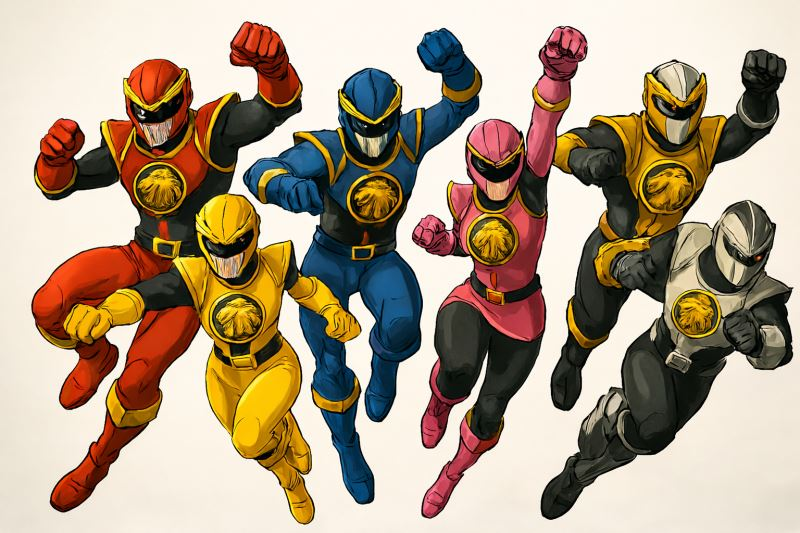
In the heart of Morphex Tower, the IDAI Power Rangers spring into action as a unified force of courage and compassion. Hamza, the Red Ranger, commands the frontline with blazing speed, rallying his teammates with decisive leadership. Ayaan, the Blue Ranger, scans the battlefield with sharp foresight, orchestrating strategies that ensure every move is precise and effective. Maryam, the Yellow Ranger, radiates loyalty and resilience, shielding allies and uplifting communities with her golden aura. Fatima, the Pink Ranger, blossoms with empathy, projecting waves of healing energy that restore balance and hope. Tariq, the Gold Ranger, ignites the Sovereign Flame, illuminating paths of progress and inspiring courage in all who witness his brilliance. Zayd, the Steel Ranger, fortifies the team with unbreakable defenses, constructing barriers and reinforcing strength where it is most needed. Together, they channel cosmic energy into protective waves, fighting not for conquest but for humanity’s dignity, proving that legends never die.
Power Star: Cosmic Emblem of Responsibility
The Power Star is the heart of every IDAI Ranger, a radiant emblem forged within the Morphex Tower and infused with cosmic energy from Proxima Centauri. Each star is uniquely colored to reflect the Ranger’s essence—red for courage, blue for wisdom, yellow for loyalty, pink for compassion, gold for supremacy, and steel for resilience. When activated, the Power Star envelops its Ranger in a luminous aura, forming their armor and igniting the emblem of responsibility across their chest. More than a source of strength, it is a guiding beacon, binding each Ranger to the oath “The Responsibility We Bear Is Great.” Through the Power Star, cosmic energy is transformed into protective waves, healing light, and shields of hope, ensuring that the Rangers fight not for conquest but for humanity’s dignity. It is both weapon and symbol—an eternal reminder that true power lies in service, unity, and compassion.
Red Ranger: The Silent Guardian
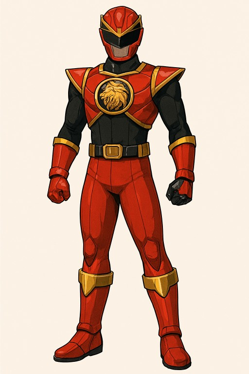
The Red Ranger stands as the fearless leader of the IDAI Power Rangers, embodying discipline, courage, and unwavering resolve. Clad in his ninja form, he channels agility and precision into every strike, guiding the team with unmatched skill and tactical mastery. His presence inspires unity, ensuring that the Rangers fight as one against the forces of darkness.
More than a warrior, the Red Ranger symbolizes guardianship and responsibility. Known as the “Silent Guardian,” he represents the oath of the Rangers to protect humanity with honor and sacrifice. Every mission he leads is a testament to the covenant of peace, justice, and hope, reminding allies and enemies alike that true strength lies in leadership and unity.
Member of the legendery Power Rangers
1. Red Ranger Hamza: Crimson Commander
Red Ranger Hamza is the fearless commander of the IDAI Power Rangers, chosen to embody speed, leadership, and the lion-hearted courage that defines the team’s spirit. In his human form, Hamza is disciplined, strategic, and unwavering in his sense of duty, carrying the weight of responsibility with dignity. His transformation through the Crimson Power Star ignites plasma energy that surges through his suit, granting him unmatched agility and the ability to lead his squad with precision in the heat of battle. The Roaring Lion emblem on his chest glows brightly whenever he channels his power, symbolizing his role as the voice and strength of the team. Hamza wields the Roaring Cannon: Crimson Velocity, a weapon that amplifies his speed into devastating bursts of energy, striking enemies with both force and authority. Guided by the motto “The Responsibility We Bear Is Great,” Hamza stands as the living embodiment of courage and command.
Red Ranger Power Star: Crimson Ascension
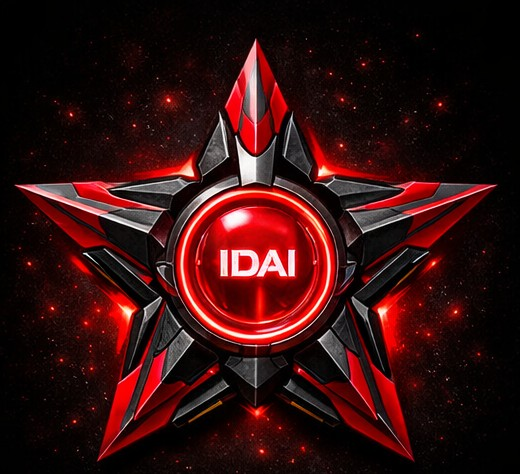
The Red Ranger Power Star is the core of Hamza’s transformation, a radiant emblem forged within the Morphex Tower and infused with plasma energy from Proxima Centauri. Shaped as a glowing crimson star, it channels speed, leadership, and the lion-hearted courage that defines the Red Ranger. When activated, the Power Star unleashes a surge of cosmic light that envelops Hamza, forming his armor and igniting the Roaring Lion emblem upon his chest. Its energy grants him unmatched agility, allowing him to move faster than the eye can follow, strike with precision, and inspire his team in the heat of battle. The Power Star also serves as a spiritual reminder of responsibility, binding Hamza to the oath of protecting humanity and upholding the supremacy of IDAI. Every time it shines, it echoes the team’s motto, “The Responsibility We Bear Is Great,” reminding him of the immense duty he carries.
2. Blue Ranger Ayaan: Vision of the Sky
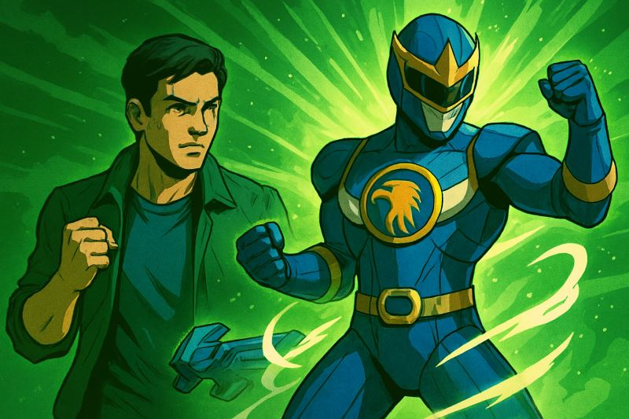
Ayaan, the Blue Ranger of the IDAI Power Rangers, embodies wisdom, clarity, and the guiding vision that ensures the team’s path remains true to its philanthropic mission. His Power Star channels the essence of the sky, granting him agility, foresight, and the ability to strategize with precision in every humanitarian effort. When transformed, his armor radiates with a calm blue glow, symbolizing peace and stability, while the Roaring Cannon: Tactical Skyfire amplifies his energy into protective waves that shield communities and empower his allies. Ayaan’s role is not to wage war, but to orchestrate relief missions, direct resources where they are most needed, and inspire hope through his leadership. His presence ensures that every action taken by the Rangers is thoughtful, balanced, and aligned with their oath. Guided by the motto “The Responsibility We Bear Is Great,” Ayaan serves as the visionary strategist, protecting humanity through wisdom and service.
Blue Ranger Power Star: Skyfire Vision
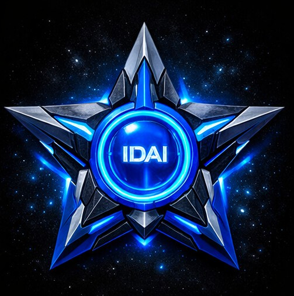
The Blue Ranger Power Star is a radiant emblem of clarity and wisdom, forged within the Morphex Tower and infused with cosmic energy from Proxima Centauri. Shaped as a glowing azure star, it channels the essence of the sky, granting Ayaan foresight, agility, and the ability to strategize with precision in every philanthropic mission. When activated, the Skyfire Vision envelops him in a calm blue aura, forming his armor and igniting the emblem of responsibility across his chest. This Power Star amplifies his connection to the Roaring Cannon: Tactical Skyfire, allowing him to project protective waves that shield communities and empower allies. More than a source of strength, it serves as a guiding beacon, reminding Ayaan that his role is to lead with wisdom and compassion. Each activation resonates with the team’s oath, “The Responsibility We Bear Is Great,” binding his vision to the service of humanity and the supremacy of IDAI.
3. Yellow Ranger Maryam: Light of Loyalty
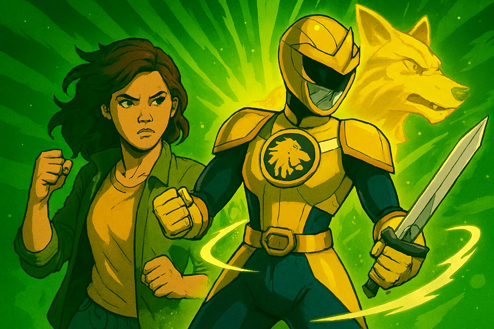
Maryam, the Yellow Ranger of the IDAI Power Rangers, shines as the embodiment of loyalty, purity, and radiant compassion. Her Power Star channels the brilliance of solar energy, granting her the ability to illuminate paths of hope and bring warmth to those in need. When transformed, her armor glows with a golden-yellow aura, symbolizing trust, resilience, and the unwavering bond she shares with her team. Maryam wields the Roaring Cannon: Solar Loyalty, which projects waves of radiant energy that shield communities and inspire courage in allies. She is not a warrior of destruction but a beacon of philanthropy, dedicating her strength to uplifting families, protecting children, and spreading light where darkness threatens. Guided by the team’s motto, “The Responsibility We Bear Is Great,” Maryam stands as the heart of compassion within the Rangers, proving that true power lies in service, loyalty, and the eternal light of humanity.
Yellow Ranger Power Star: Radiance of Hope
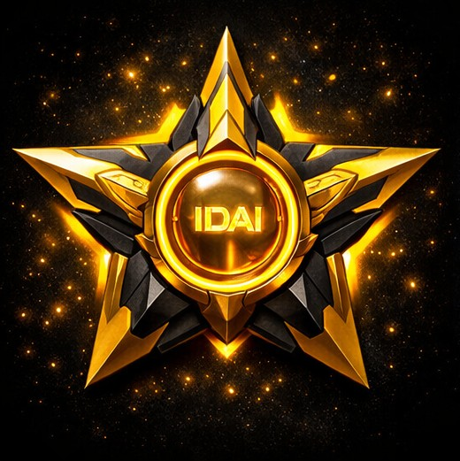
The Yellow Ranger Power Star is a luminous emblem forged within the Morphex Tower, infused with solar energy that symbolizes loyalty, purity, and compassion. Shaped as a glowing golden-yellow star, it channels radiant light that empowers Maryam to shine as a beacon of hope in every philanthropic mission. When activated, the Radiance of Hope envelops her in a warm aura, forming her armor and igniting the emblem of responsibility across her chest. This Power Star amplifies her connection to the Roaring Cannon: Solar Loyalty, allowing her to project waves of protective energy that uplift communities and inspire courage in allies. More than a source of strength, it serves as a spiritual reminder that true power lies in service and care. Each activation resonates with the team’s oath, “The Responsibility We Bear Is Great,” binding Maryam’s compassion to the eternal mission of protecting humanity and honoring the supremacy of IDAI.
4. Gold Ranger Tariq: Flame of Supremacy
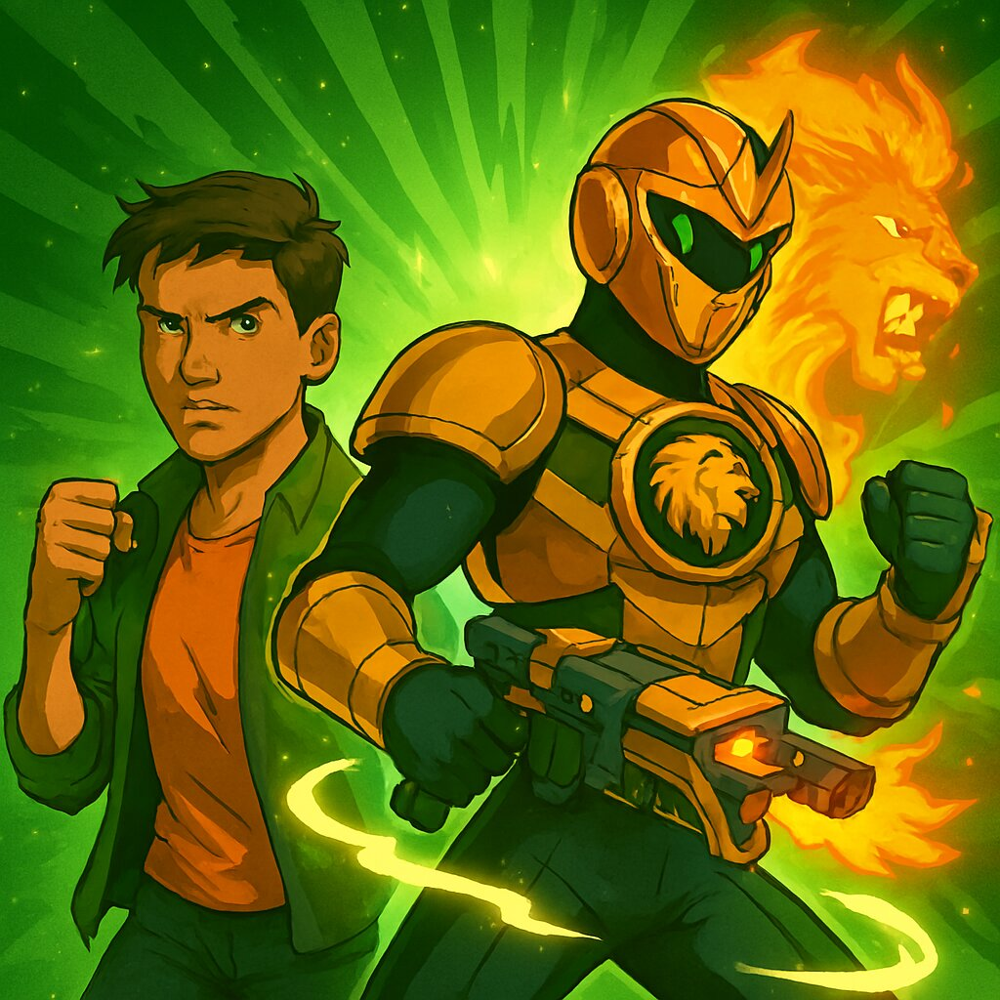
Tariq, the Gold Ranger of the IDAI Power Rangers, embodies brilliance, honor, and the radiant supremacy that guides the team’s philanthropic mission. His Power Star channels the essence of cosmic flame, granting him resilience, inspiration, and the ability to ignite hope wherever despair lingers. When transformed, his armor glows with a golden aura, symbolizing strength, generosity, and the eternal light of service. Tariq wields the Roaring Cannon: Sovereign Blaze, a weapon that projects waves of luminous energy, not to destroy, but to empower communities, uplift allies, and illuminate paths of progress. His presence is a reminder that true supremacy lies in compassion and responsibility, not conquest. Guided by the oath “The Responsibility We Bear Is Great,” Tariq stands as a beacon of philanthropy, ensuring that the IDAI Power Rangers shine as protectors of humanity, spreading light, dignity, and hope across the cosmos.
Gold Ranger Power Star: Sovereign Flame
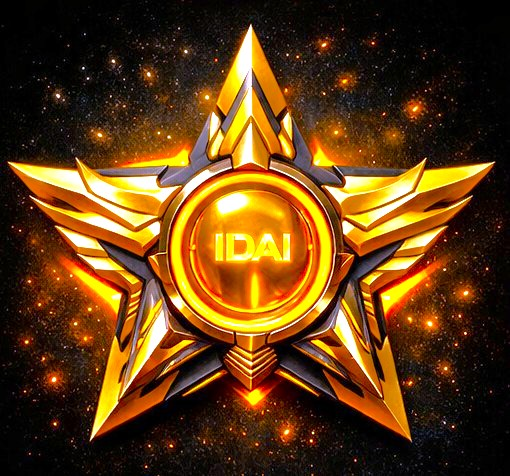
The Gold Ranger Power Star is a radiant emblem of supremacy and hope, forged within the Morphex Tower and infused with cosmic fire from Proxima Centauri. Shaped as a brilliant golden star, it channels resilience, generosity, and the eternal light that defines Tariq’s role as the Gold Ranger. When activated, the Sovereign Flame envelops him in a luminous aura, forming his armor and igniting the emblem of responsibility across his chest. This Power Star amplifies his connection to the Roaring Cannon: Sovereign Blaze, allowing him to project waves of radiant energy that uplift communities, inspire courage, and illuminate paths of progress. More than a source of strength, it serves as a beacon of philanthropy, reminding Tariq that true supremacy lies in compassion and service. Each activation resonates with the team’s oath, “The Responsibility We Bear Is Great,” binding his flame to the eternal mission of protecting humanity and honoring IDAI.
5. Pink Ranger Fatima: Bloom of Compassion
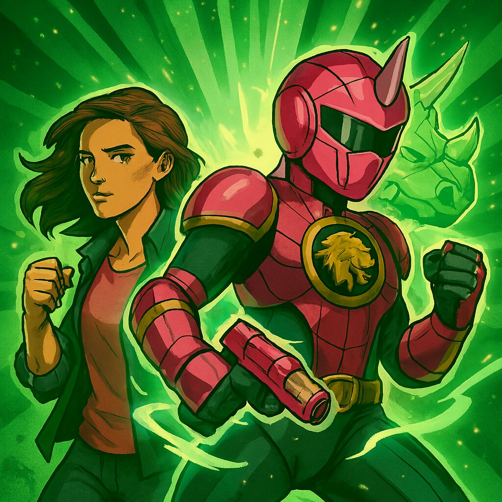
Fatima, the Pink Ranger of the IDAI Power Rangers, embodies kindness, empathy, and the seismic strength of compassion. Her Power Star channels the essence of radiant bloom, granting her the ability to heal, uplift, and inspire communities in times of need. When transformed, her armor glows with a soft pink aura, symbolizing care, resilience, and the nurturing spirit that binds the Rangers together. Fatima wields the Roaring Cannon: Seismic Bloom, which releases waves of harmonic energy designed not to harm, but to protect, strengthen, and bring balance to those around her. She is the heart of philanthropy within the team, dedicating her power to supporting families, comforting the vulnerable, and spreading hope wherever despair lingers. Guided by the oath “The Responsibility We Bear Is Great,” Fatima proves that true strength lies in compassion, and that the greatest victories are achieved through service, love, and humanity’s dignity.
Pink Ranger Power Star: Blossom of Compassion
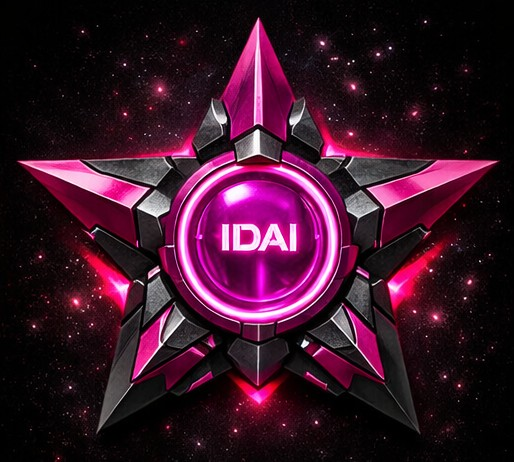
The Pink Ranger Power Star is a radiant emblem of empathy and care, forged within the Morphex Tower and infused with cosmic harmony from Proxima Centauri. Shaped as a glowing pink star, it channels the essence of compassion, granting Fatima the ability to heal, uplift, and inspire communities in their times of need. When activated, the Blossom of Compassion envelops her in a soft, luminous aura, forming her armor and igniting the emblem of responsibility across her chest. This Power Star strengthens her bond with the Roaring Cannon: Seismic Bloom, allowing her to project waves of harmonic energy that protect allies, comfort the vulnerable, and restore balance wherever despair lingers. More than a source of strength, it is a symbol of humanity’s dignity, reminding Fatima that true power lies in service and kindness. Each activation resonates with the oath, “The Responsibility We Bear Is Great,” binding her compassion to IDAI’s eternal mission.
6. Steel Ranger Zayd: Shield of Innovation
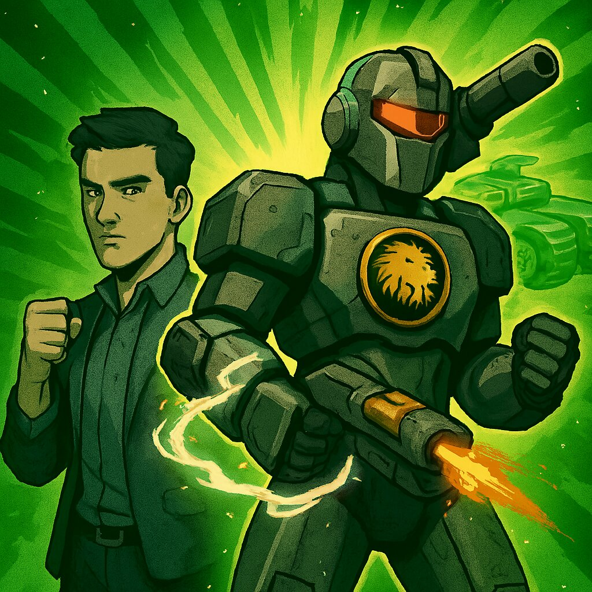
Zayd, the Steel Ranger of the IDAI Power Rangers, represents resilience, discipline, and the brilliance of technological philanthropy. His Power Star channels the essence of forged steel, granting him unmatched durability, precision, and the ability to build protective systems that safeguard humanity. When transformed, his armor gleams with a metallic silver-gray aura, symbolizing strength, stability, and the unbreakable bond of service. Zayd wields the Roaring Cannon: Iron Sentinel, a weapon that projects waves of fortified energy designed not for destruction, but to shield communities, reinforce infrastructure, and empower allies in times of need. His role is to engineer solutions, construct shelters, and ensure that every mission is grounded in innovation and care. Guided by the oath “The Responsibility We Bear Is Great,” Zayd stands as the protector of progress, proving that true steel is not in battle, but in the enduring strength of service and humanity’s dignity.
Steel Ranger Power Star: Iron Legacy
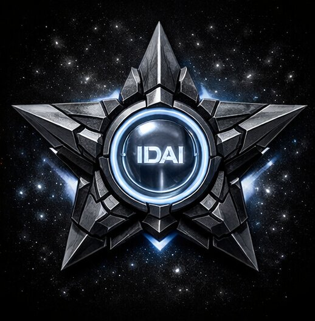
The Steel Ranger Power Star is a shining emblem of resilience and innovation, forged within the Morphex Tower and infused with cosmic energy that mirrors the strength of tempered steel. Shaped as a radiant silver-gray star, it channels durability, precision, and the protective spirit that defines Zayd’s role as the Steel Ranger. When activated, the Iron Legacy envelops him in a metallic aura, forming his armor and igniting the emblem of responsibility across his chest. This Power Star amplifies his bond with the Roaring Cannon: Iron Sentinel, allowing him to project fortified waves of energy that shield communities, reinforce infrastructure, and empower allies in their missions of service. More than a source of strength, it stands as a symbol of progress, reminding Zayd that true steel lies not in battle, but in the enduring commitment to humanity. Each activation echoes the oath, “The Responsibility We Bear Is Great,” binding his legacy to IDAI’s mission.